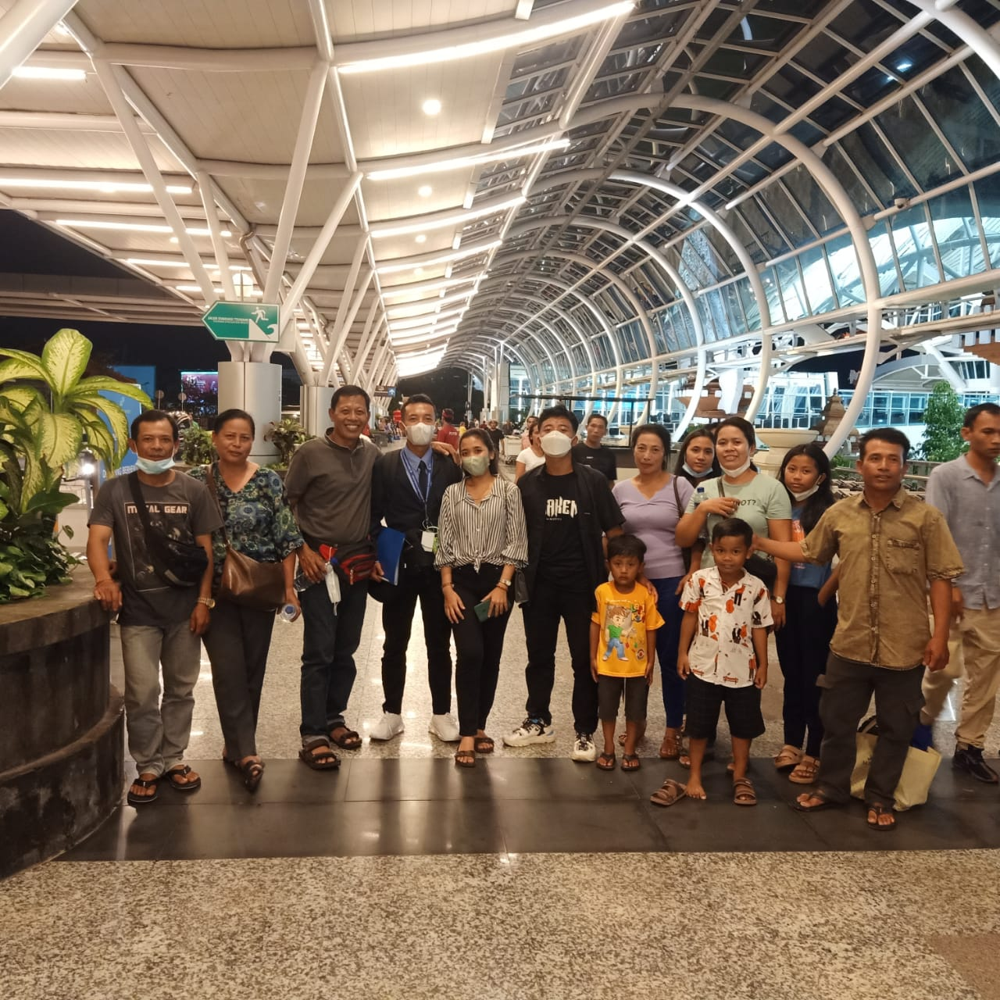

Perjalanan Sampai Detik Ini
Perjalanan Seseorang Dimulai Dari hal hal kecil yang menjadi motivasi untuk terus melangkah maju dan selalu Semangat untuk mecapai tujuan yang diinginkan.

Masa SD
Masa-Masa yang penuh dengan keceriangan yang sangat menyenangkan pergi dengan uang 2 ribu lebih baik daripada 300 perminggu.

Masa SMP
Masa yang penuh dengan semangat karena lingkungan yang positif dan mendapatkan pengalaman untuk selalu berkembang untuk kedepannya .

Masa SMK
Masa yang penuh Dengan Semangat untuk terus berjuang demi keluarga yang ada dirumah menunggu anak laki lakinya datang dengan penuh semangat.

Support Keluarga
Keluarga Adalah Support utama yang selalu membuatku kuat dan selalu semangat dalam Menjalani hari-hari yang sangat berat,selalu ada senyuman yang selalu kulihat walau selalu gagal dalam hal apapun.